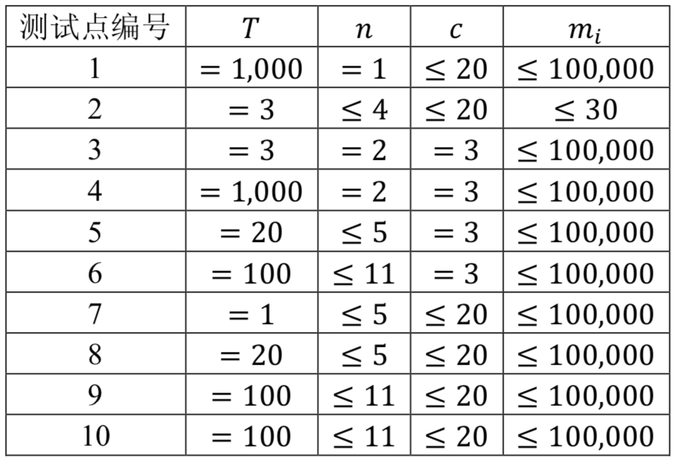

小 X 驾驶着他的飞船准备穿梭过一个 $𝑛$ 维空间，这个空间里每个点的坐标可以用 $𝑛$ 个实数来表示，即 $(𝑥_1,𝑥_2,...,𝑥_n)$。
为了穿过这个空间，小 X 需要在这个空间中选取 $𝑐(𝑐≥2)$ 个点作为飞船停留的地方，而这些点需要满足以下三个条件：
小 X 还没有确定他的最终方案，请你帮他计算一下一共有多少种不同的方案满足他的要求。由于答案可能会很大，你只需要输出答案$\mod 10007$ 后的值。
第一行包含一个正整数 $𝑇$，表示有 $𝑇$ 组数据需要求解。
每组数据包含两行，第一行包含两个正整数 $𝑛,𝑐(𝑐≥2)$，分别表示空间的维数和需要选择的暂停点个数。
第二行包含 $𝑛$ 个正整数，依次表示 $𝑚_1,𝑚_2,...,𝑚_n$。
包含 $𝑇$ 行，每行包含一个非负整数，依次对应每组数据的答案。
3 2 3 3 4 3 3 3 4 4 4 4 5 9 7 8
2 4 846
【样例说明】
样例数据第一组共有两种可行方案：一种是选择（1,1）,（2,2）,（3,3），另一种是选择（1,2）,（2,3）,（3,4）。
【数据规模】

 Comet OJ
Comet OJ